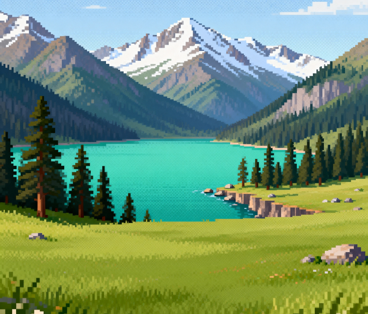
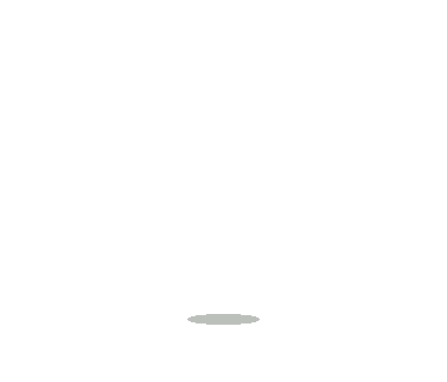
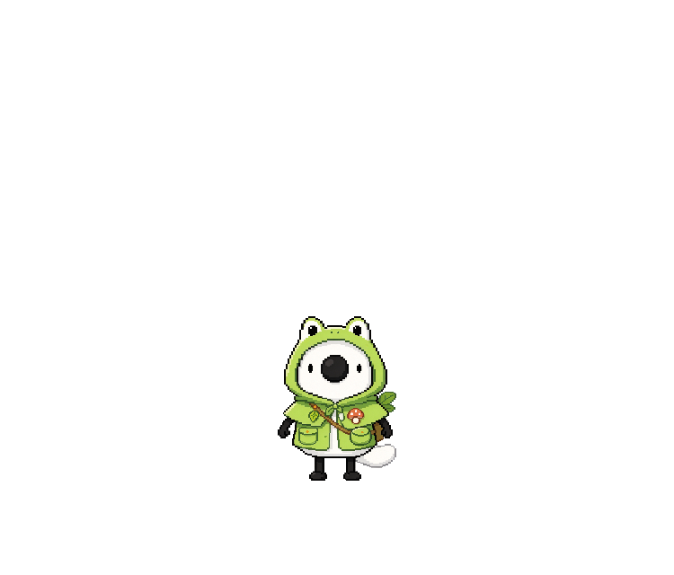

<!doctype html><html lang="zh-CN"><meta charset="utf-8"><meta name="viewport" content="width=device-width, initial-scale=1"><title>旅途 · E4 v2 本地验收</title>
<style>
*{box-sizing:border-box}body{margin:0;background:#f2eee2;color:#303d31;font:16px/1.45 system-ui,sans-serif}main{width:min(100%,760px);margin:auto;padding:0 12px}header{height:66px;border-bottom:1px solid #c9c6ad;padding:7px 0}nav{font-size:14px;color:#4a5948}.title{height:44px;display:flex;align-items:center;justify-content:space-between}h1{font-size:20px;margin:0}a,button{min-height:44px;display:inline-flex;align-items:center;color:#2c5236;font:inherit}.scene{height:320px;position:relative;overflow:hidden;border-radius:8px;background:#dde4bf}.scene img{position:absolute;width:100%;height:100%;inset:0;object-fit:cover;image-rendering:pixelated}.copy{margin:8px 0;padding:7px 9px;background:#f9f7ed;border-radius:6px}.find{background:#fcfaef;border:1px solid #c9c6ad;padding:6px 9px;border-radius:6px}.find small{display:block}.find a{font-size:14px}dialog{max-width:85%}@media(min-width:800px){.scene{height:420px}}
</style>
<main><header><strong>看山出门</strong><nav>小屋　旅途　来信　手账</nav></header><section class="title"><h1>旅途</h1><a href="#home-fixture" onclick="document.getElementById('home-fixture').showModal();return false">回小屋</a></section><section id="content"></section><dialog id="home-fixture"><p>回小屋入口 · 本地验收夹具</p><form method="dialog"><button>关闭</button></form></dialog></main>
<script>
const state=new URLSearchParams(location.search).get("state")||"running";
const content=document.getElementById("content");
const scene='<div class="scene"></div>';
const copy={running:"刘看山出门了。",done:"示例归来话｜湖边的草地很开阔。",loading:"正在读取旅途记录。",timeout:"这趟旅途已超时，记录可能不完整。",failed:"这趟旅途未能完成。", "read-error":"暂时读不到旅途记录。",cached:"离线 · 上次记录（示例）"};
if(state==="running"||state==="done"||state==="cached")content.insertAdjacentHTML("beforeend",scene);
const message=document.createElement("p");message.className="copy";message.textContent=copy[state];content.append(message);
if(state==="done") content.insertAdjacentHTML("beforeend",'<article class="find"><strong>湖边的针叶林</strong><small>来源：视觉测试夹具</small><a href="#fixture" onclick="document.getElementById(\'fixture\').showModal();return false">查看示例发现</a></article><dialog id="fixture"><p>示例发现，仅供布局验收。</p><form method="dialog"><button>关闭</button></form></dialog>');
if(state==="read-error")content.insertAdjacentHTML("beforeend",'<button onclick="location.reload()">重试读取</button>');
</script></html>
